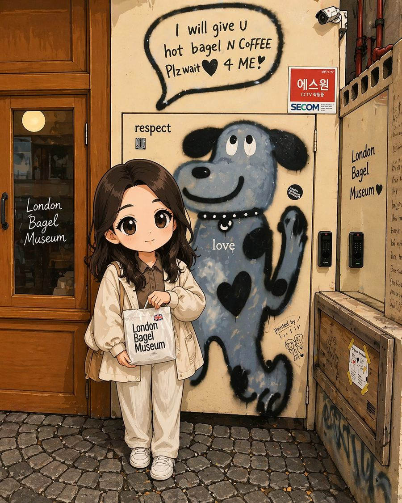
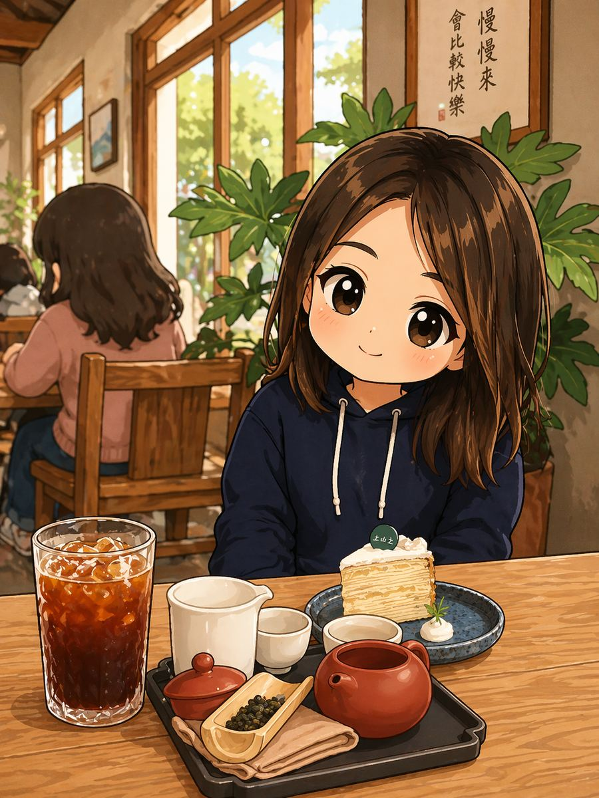
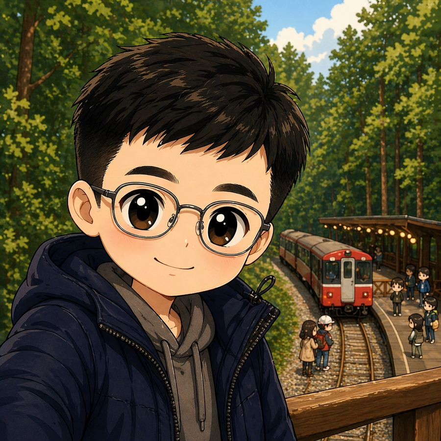
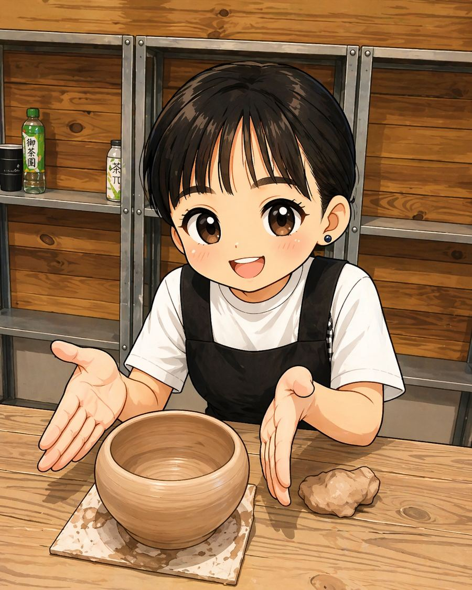
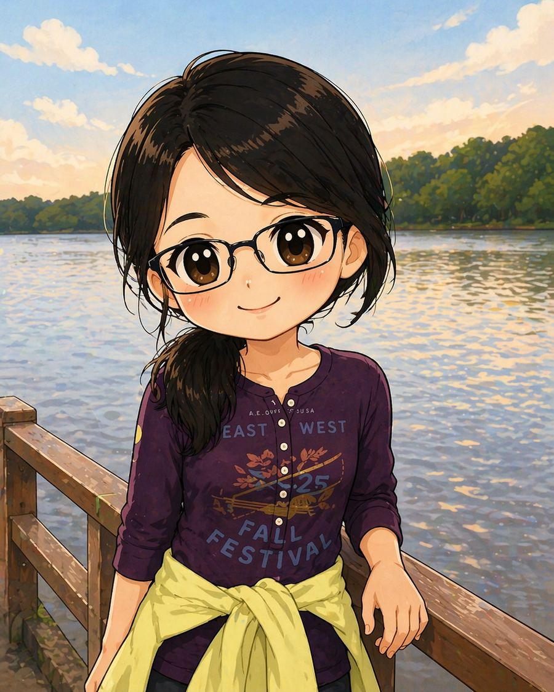
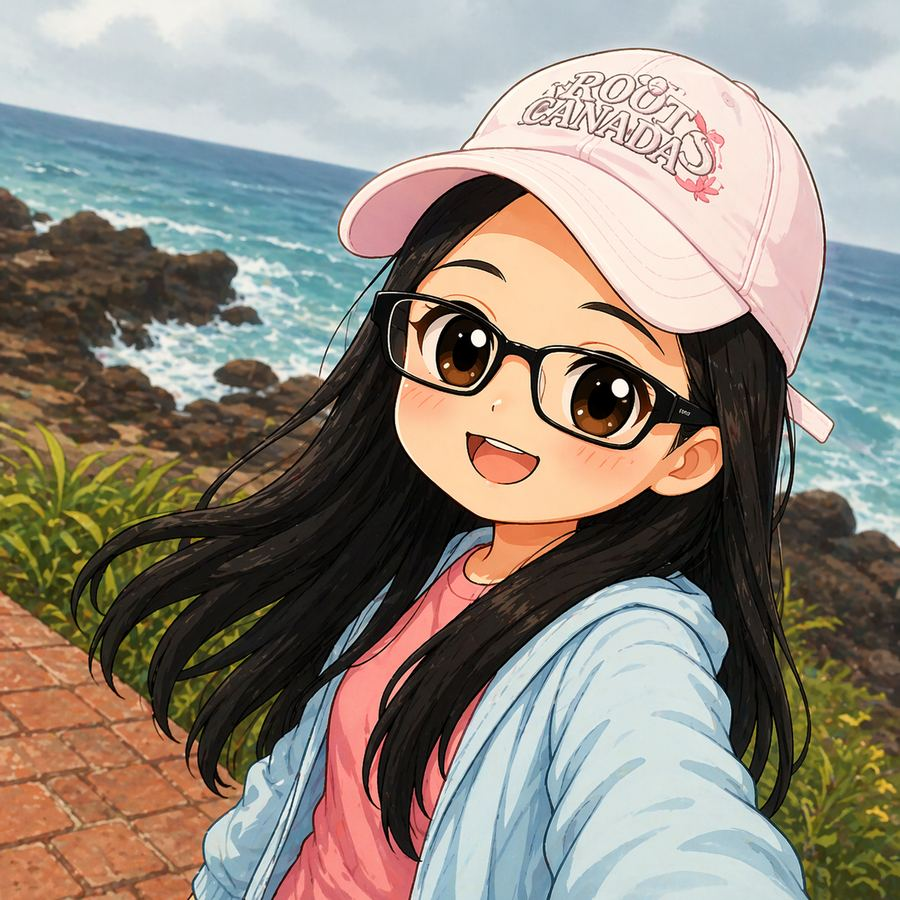

創造力資優班
以創造力教育為核心，透過主題探究、跨域整合與動手實作， 培養學生的觀察力、思考力、探究力與實踐力。 孩子在課程中學習發現問題、提出想法、修正方案，並完整表達自己的成果。
Qing Xi Elementary School
青溪國小創造力資優班About
以創造力教育為核心，透過主題探究、跨域整合與動手實作， 培養學生的觀察力、思考力、探究力與實踐力。 孩子在課程中學習發現問題、提出想法、修正方案，並完整表達自己的成果。
以自主學習、多元探索、適性發展與同理共好為核心， 透過研究探究、科技實作、跨域學習與情意發展課程， 陪伴學生在原班情境中穩定發展潛能並拓展學習視野。
透過多元課程、適性支持與合作陪伴， 引導學生發展創意思考、主題探究、合作表達與獨立學習能力。
創造力資優班介紹
以創造力教育為核心，透過主題探究、跨域整合與動手實作， 陪伴學生發展思考力、探究力、實踐力與表達力，讓每個孩子都能在真實學習情境中看見自己的可能。
以創造力教育為出發點，重視觀察、思考、探索與實踐的完整歷程。 透過多元媒材、真實問題與跨域整合，引導學生從生活中發現主題、形成想法， 並在不斷嘗試與修正中建立屬於自己的學習方式。
培養學生的創意思考、主題探究、問題解決、合作溝通與成果表達能力， 讓孩子能在多元情境中整合所學、清楚表達觀點，並逐步發展自信與獨立學習能力。
結合媒材應用、動畫製作、結構組裝、主題探究與成果發表， 讓孩子在動手實作中驗證想法、累積經驗，並透過歷程整理與公開展示， 強化反思能力與完整表達能力。
巡迴班介紹
以學生個別特質與潛能為出發點，透過有系統的課程設計與多元學習情境， 引導學生認識自我、發展優勢，並在探索與實作中逐步建立自信與方向。
本班以「自主學習、多元探索、適性發展、同理共好」為核心理念， 致力於打造兼具深度與廣度的學習環境。 我們重視每一位學生獨特的特質與潛能，透過多元且有系統的課程設計， 引導學生認識自我、發展優勢，並在探索中逐步建立自信與方向。 期盼學生在多元學習情境中，逐步發展個人特色，理解自身在群體與社會中的角色， 並展現關懷他人、主動參與的行動力，成為具備思考力與責任感的未來公民。
培養學生自我覺察與自主探究的能力，透過多元學習與實作經驗， 發展創新思考與問題解決能力，並在學習歷程中建立良好的人際互動與社會關懷， 逐步展現個人潛能與行動力。
結合研究探究、科技實作與跨域學習，本班循序培養學生自主探究能力與創意思考， 並透過情意發展課程深化自我理解與生涯探索，使學生在多元學習情境中累積實作經驗並展現個人潛能。 同時，透過與他校資優班進行校際交流，拓展學習視野並累積合作與溝通經驗。
引導學生關心周遭人事物，從感受與同理中發現問題與學習主題。
培養提問、蒐集資料、推論分析與整理觀點的能力，建立研究基礎。
鼓勵學生跳脫既有框架，運用創意思考發展新穎而有價值的點子。
透過操作、測試、修正與發表，讓創意真正成為可見的作品與成果。
師資團隊
由創造力資優資源班與相關支持教師共同陪伴學生學習，從課程設計、主題探究到成果發表， 一起建立穩定而多元的學習環境。

不分類資優巡迴輔導老師

不分類資優巡迴輔導老師

創造力資優資源班教師

創造力資優資源班教師

創造力資優資源班教師

創造力資優資源班教師